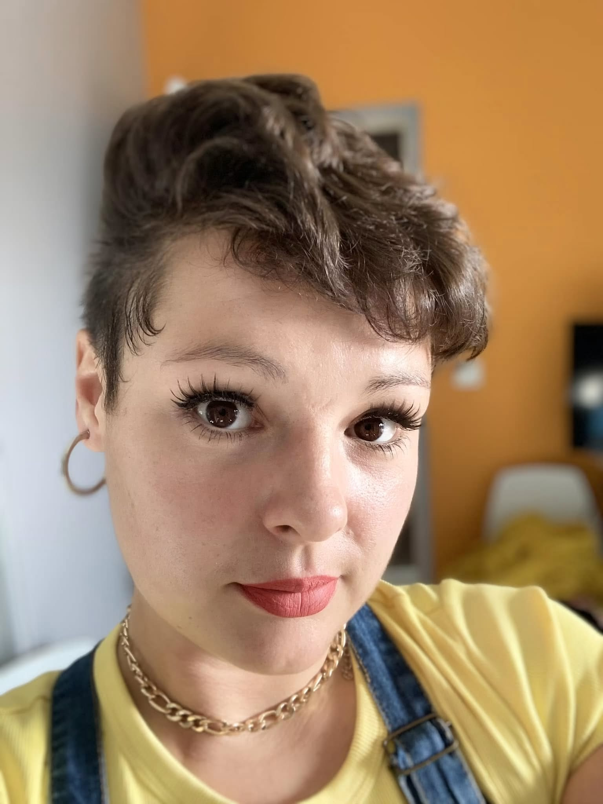

Digitalda

Digitalda était une artiste française passionnée par la culture reggae et jamaïcaine. Fille de DJ, elle grandit au contact de la musique et s’implique dans le reggae dès l’âge de 16 ans. Elle découvre très tôt le monde des sound systems et se fait également connaître comme selecta.
En 2013, elle présente son premier titre « What A Gwaan », puis se fait remarquer dans la scène reggae-dancehall européenne. Son univers mêle dancehall digital, rub-a-dub et influences jamaïcaines. Elle écrit ses textes en anglais et en créole jamaïcain, avec une énergie affirmée et une place importante accordée à l’émancipation des femmes dans la musique.
Artiste aux multiples facettes, Digitalda explore aussi les arts numériques et la création visuelle. Ses clips associent musique reggae-dancehall et expérimentations autour de l’image, notamment avec « Mad Ting » et « Limit ».
En hommage à son talent et à son univers, Terroir Productions a publié Deh Pon Di Low, un projet vinyle réalisé avec Cisko, qui concrétise un rêve musical de Digitalda. Son énergie et sa créativité continuent de faire vivre son héritage dans la scène reggae.